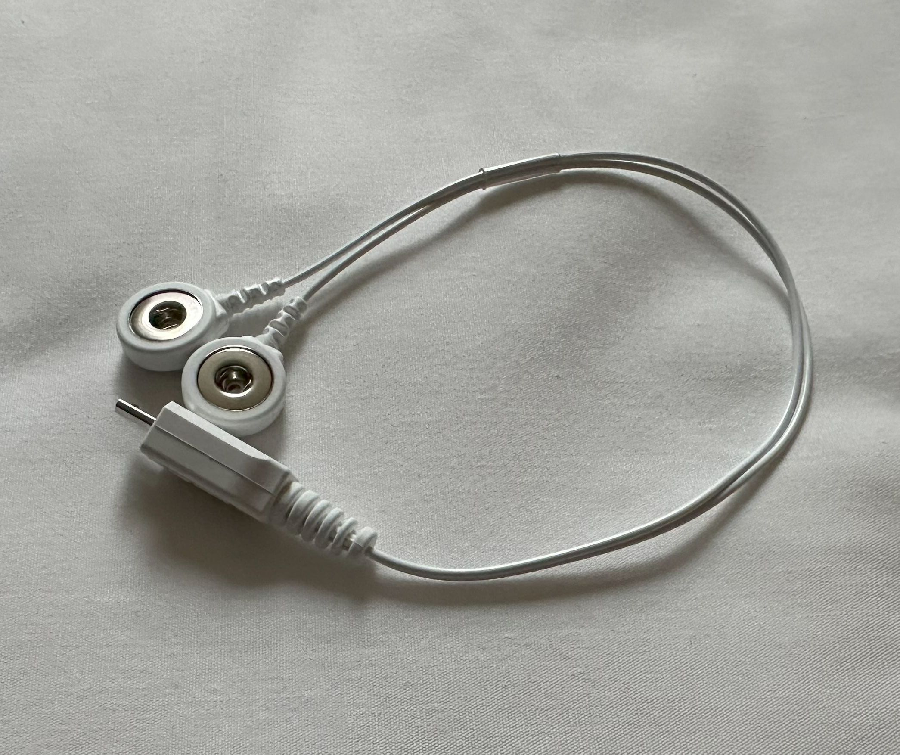
 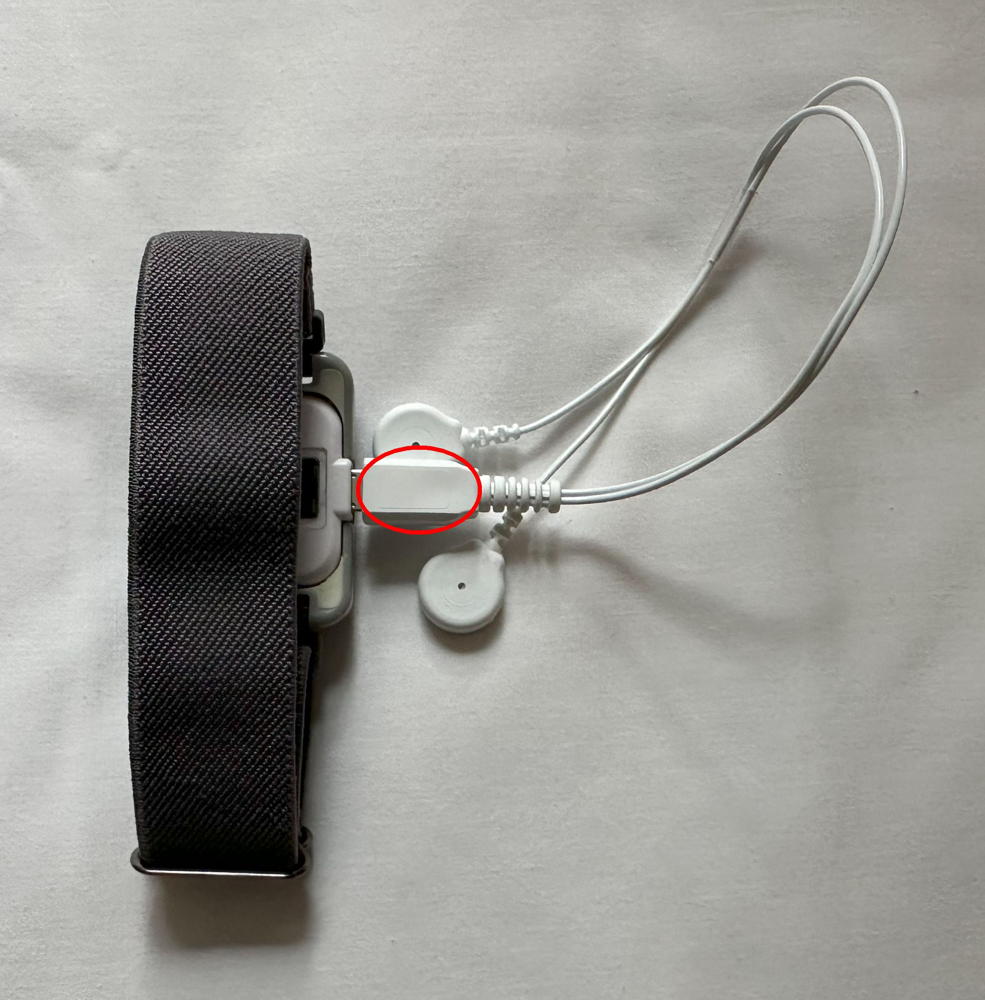
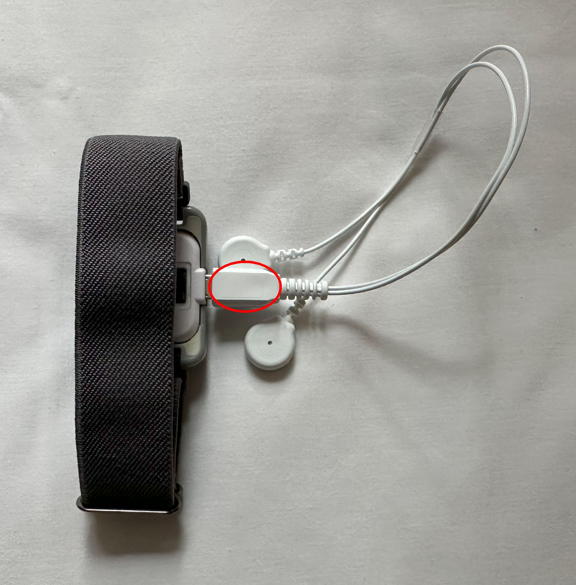
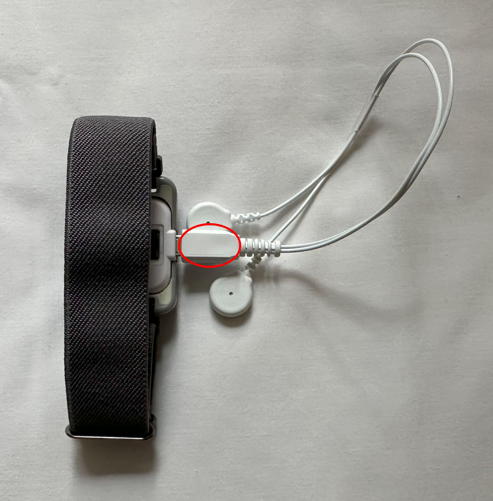
The sections below will help you learn how to wear the DIRT watch and connect it to the provided data collection cable and sticky pads. You will need to do this everytime you want to participate in our research study.
The data collection cable must be connected to the watch as illustrated below. Please note that on the cable, you will see a "B" on the plug end of the cable. The "B" side of the cable should face upward when plugging it into the watch as shown below (same side as the participant ID label on the watch).
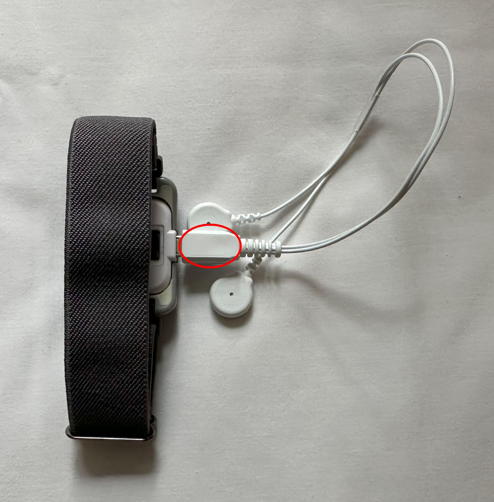
Once you have connected the data collection cable to your DIRT watch, you can wear the device on your left wrist as shown below. Please do this BEFORE putting on any sticky or velcro pads.
In each pack of sticky pads, you will see 6 disposable pads. Each time you participate in a study, you will only need 2 sticky pads. To use these sticky pads, please apply them to your index and middle fingers as illustrated below.
 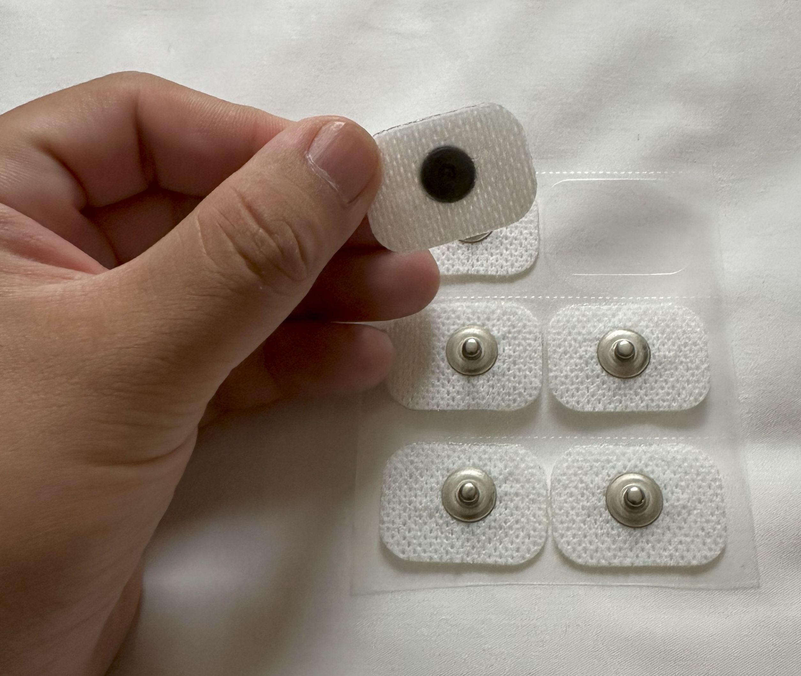
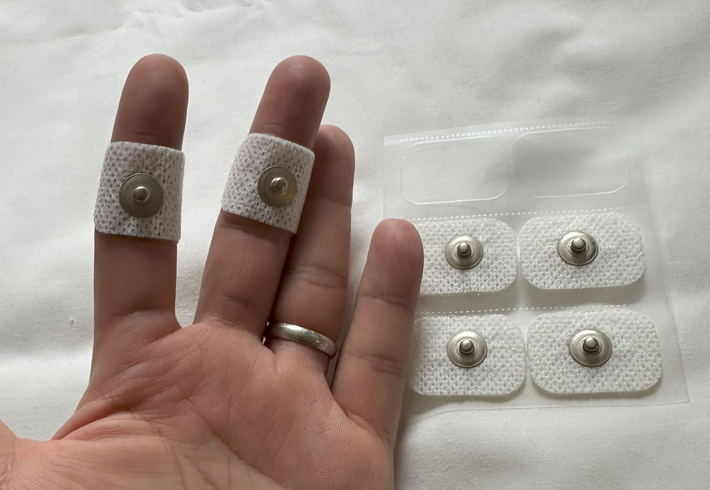
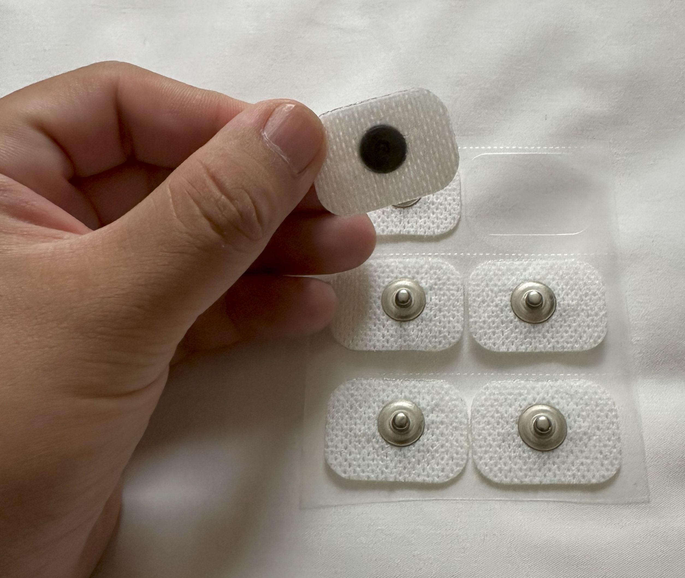
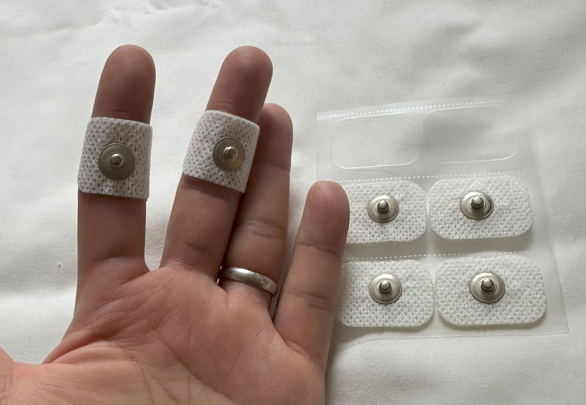
Once you have applied the sticky pads onto your fingers, you can attach the data collection cable as illustrated below. At this point, you are ready to participate in a study!
 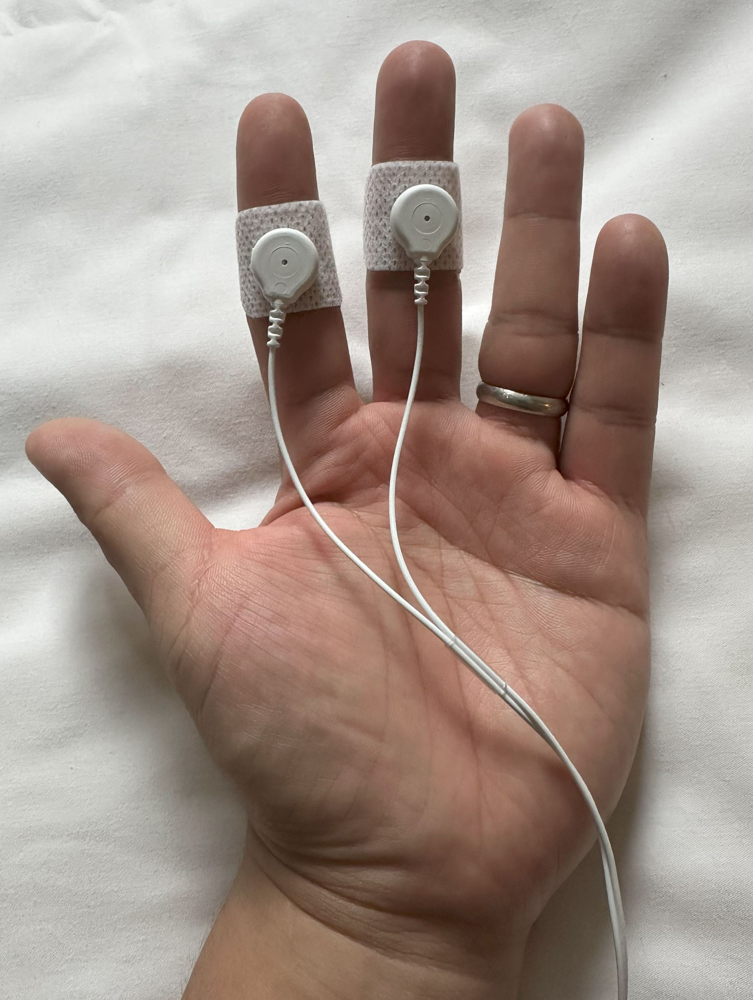
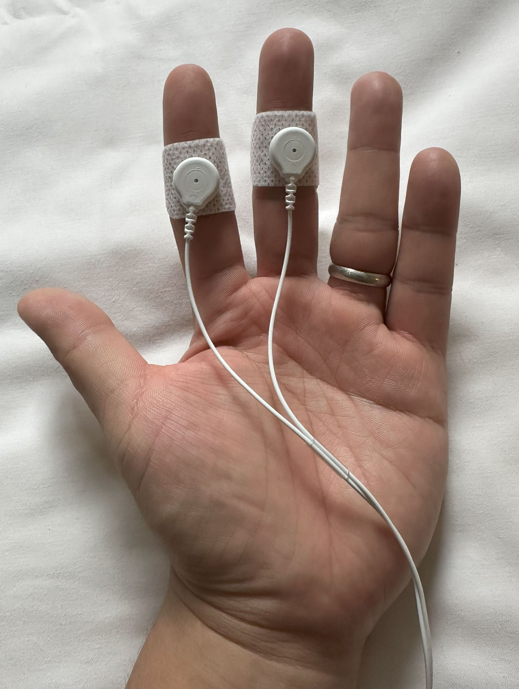